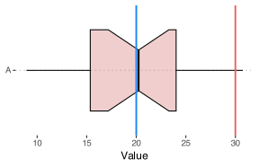
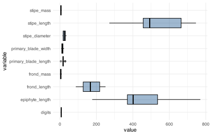
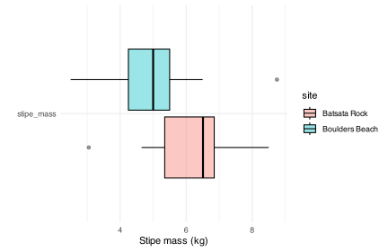

![]()
# create a single sample of random normal data
set.seed(666)
r_one <- data.frame(dat = rnorm(n = 20, mean = 20, sd = 5),
sample = "A")7. t-tests
Comparing the means of two groups
In this Chapter
- One-sample t-tests
- Two-sample s t-tests
- Paired t-tests
- Comparison of proportions
Cheatsheet
Find here a Cheatsheet on statistical methods.
Tasks to complete in this Chapter
- Task E 1-6
1 At a glance
Student’s t-tests are used to compare the means of two groups to determine if there is a significant difference between them. These are the expectations about your data:
Continuous dependant variable The dependent variable should be measured on a continuous scale (e.g., height, mass, concentration).
-
Categorical independent variable The independent variable has two independent groups being compared, so we expect a factor variable with two groups (e.g. fertiliser levels of high and low, vegetation types of grassland and forest, herbivory levels of moderate and intense). The observations within each group should not affect the other group’s observations. There are two types of t-tests depending on whether the samples are independent or paired (related):
- Independent sample t-test Appropriate when the groups consist of different individuals or observations.
- Paired sample t-test: Appropriate when the groups are related, such as before-and-after measurements or matched pairs of individuals.
Other assumptions to be aware of with regards to the dependent variable:
Normal distribution The data in each group should follow a normal distribution or be approximately normally distributed for you to use the Student’s t-test,
t.test(). If the assumption of normality is not met, as, for example, determined with theshapiro.test(), you may consider using a non-parametric alternative such as the Wilcoxon signed-rank test,wilcox.test(), as a replacement for a one-sample t-test or the Mann-Whitney test, also withwilcox.test()(but note how to set the function arguments), in stead of a two-sample t-test. This assumption can be relaxed for large sample sizes due to the Central Limit Theorem.Homoscedasticity The variances of the two groups should be approximately equal. If this assumption is not met, you can use Welch’s t-test in stead of Student’s t-test, as the former does not require variances to be equal. The default setting for
t.test()is actually Welch’s t-test; to perform a Student’s t-test (one- or two-sample t-test) you need to set the argumentvar.equal = TRUE.Random sampling The data should be obtained through random sampling or random assignment, ensuring that each observation has an equal chance of being included in the sample.
2 Introduction to t-tests
The simplest experiment that makes any scientific sense is one where data are collected to represent two groups—maybe a treatment compared to a control. For example, “does adding manure to some plants have a measurable effect on their growth compared to the situation where nothing was added that might affect the plants’ growth?” To answer this very basic question one often uses a t-test.
The most commonly used t-test is Student’s t-test, a statistical hypothesis test used to determine whether two samples of data are significantly different from each other. It was introduced by William Gosset, who wrote under the pseudonym ‘Student,’ in 1908. This is a parametric test, and as already indicated, it assumes the data are normally distributed and that the variances of the two samples being compared are equal.
Now it becomes interesting. There are several flavours of t-tests, depending on the nature of our samples and the type of question being asked, but all of them involve comparing two samples. Specifically, the comparison involves the sample means, and as such, they test whether or not the central tendencies of two samples differ. Here are the variations:
-
One-sample t-tests: only one sample set of data that we wish to compare against a known population mean:
- one-sided one-sample t-tests
- two-sided one-sample t-tests
-
Two-sample (or independent sample) t-tests: the means of two groups are compared against each other:
- one-sided two-sample t-tests
- two-sided two-sample t-tests
-
Paired sample t-tests: two samples that are ‘matched’ or, as the name indicates, paired, i.e. they are not independent of one another:
- one-sided
- two-sided
Let’s go into detail into each of these variations of t-tests.
3 One-sample t-tests
3.1 Two-sided one-sample t-test
Hypothesis for two-sided one-sample t-test
\(H_{0}: \bar{x} = \mu_{0}\) and \(H_{a}: \bar{x} \ne \mu_{0}\)
This is the same as:
\(H_{0}: \bar{x} - \mu_{0} = 0\) and \(H_{a}: \bar{x} - \mu_{0} \ne 0\)
Here \(\bar{x}\) is the population mean and \(\mu_{0}\) the hypothesised mean to which \(\bar{x}\) is being compared. In this example we have a two-sided one-sample t-test.
As stated above, \(H_{0}\) does not make a distinction between whether it expects \(\bar{x}\) to be \(\lt\) or \(\gt\) \(\mu_{0}\).
Generally when we use a t-test it will be a two-sample t-test (see below). Occasionally, however, we may have only one set of observations (random samples taken to represent a population) whose mean, \(\bar{x}\), we wish to compare against a known population mean, \(\mu_{0}\), which had been established a priori (Equation 1). In R’s t.test() function, the default setting is for a two-sided one-sample t-test—that is, we don’t care if our \(H_{a}\) is significantly less than \(\mu_{0}\) or if it is significantly greater than \(\mu_{0}\).
The one-sample t-test:
\[t = \frac{\overline{x} - \mu}{s / \sqrt{n}} \tag{1}\]
where \(t\) is the calculated \(t\)-value, \(\overline{x}\) is the sample mean, \(\mu\) is the hypothesised population mean, \(s\) is the sample standard deviation, and \(n\) the sample size.
# compare random data against a population mean of 20
t.test(r_one$dat, mu = 20)
One Sample t-test
data: r_one$dat
t = 0.0048653, df = 19, p-value = 0.9962
alternative hypothesis: true mean is not equal to 20
95 percent confidence interval:
16.91306 23.10133
sample estimates:
mean of x
20.00719 # compare random data against a population mean of 30
t.test(r_one$dat, mu = 30)
One Sample t-test
data: r_one$dat
t = -6.7596, df = 19, p-value = 1.858e-06
alternative hypothesis: true mean is not equal to 30
95 percent confidence interval:
16.91306 23.10133
sample estimates:
mean of x
20.00719 What do the results of these two different tests show? Let’s visualise these data to get a better understanding (Figure 1).
ggplot(data = r_one, aes(y = dat, x = sample)) +
geom_boxplot(fill = "indianred", notch = TRUE,
alpha = 0.3, colour = "black") +
# population mean (mu) = 20
geom_hline(yintercept = 20, colour = "dodgerblue2",
size = 0.9) +
# population mean (mu) = 30
geom_hline(yintercept = 30, colour = "indianred2",
size = 0.9) +
labs(y = "Value", x = NULL) +
coord_flip() +
theme_pubclean()
The boxplot shows the distribution of our random data against two potential population means. Does this help now to illustrate the results of our one-sample t-tests?
3.2 One-sided one-sample t-tests
Hypothesis for one-sided one-sample t-test
For example, when we are concerned that our sample mean, \(\bar{x}\), should be less than the a priori established value, \(\mu_{0}\):
\(H_{0}: \bar{x} \ge \mu_{0}\) and \(H_{a}: \bar{x} \lt \mu_{0}\)
Only one of the two options is shown.
Remember that a normal distribution has two tails. As indicated already, when we are testing for significance we are generally looking for a result that sits in the far end of either of these tails. Occasionally, however, we may want to know if the result is specifically in one of the two tails. Explicitly the leading or trailing tail. For example, is the mean value of our sample population, \(\bar{x}\), significantly greater than the value \(\mu_{0}\)? Or, is \(\bar{x}\) less than the value \(\mu_{0}\)? This t-test is called a one-sided one-sample t-tests. To specify this in R we must add an argument as seen below:
# check against the trailing tail
t.test(r_one$dat, mu = 30, alternative = "less")
One Sample t-test
data: r_one$dat
t = -6.7596, df = 19, p-value = 9.292e-07
alternative hypothesis: true mean is less than 30
95 percent confidence interval:
-Inf 22.56339
sample estimates:
mean of x
20.00719 # check against the leading tail
t.test(r_one$dat, mu = 30, alternative = "greater")
One Sample t-test
data: r_one$dat
t = -6.7596, df = 19, p-value = 1
alternative hypothesis: true mean is greater than 30
95 percent confidence interval:
17.451 Inf
sample estimates:
mean of x
20.00719 Are these the results we would have expected? Why does the second test not return a significant result?
Task E
- Create a visualisation to graphically demonstrate the outcome of this t-test.
4 Two-sample t-tests
4.1 Two-sided two-sample t-test
Hypothesis for two-sided two-sample t-test
\(H_{0}: \bar{A} = \bar{B}\) and \(H_{a}: \bar{A} \ne \bar{B}\)
where \(\bar{A}\) is the population mean of the first sample and \(\bar{B}\) the population mean of the second sample. In this example we have a two-sided two-sample t-test, which is the default in R’s t.test() function.
As stated above, \(H_{0}\) does not make a distinction between whether it expects the difference between \(\bar{A}\) and \(\bar{B}\) to be greater than or less than 0.
A two-sample t-test is used when we have samples from two different (independent) populations whose means, \(\bar{A}\) and \(\bar{B}\), we would like to compare against one another. Sometimes it is called an independent sample t-test. Specifically, it tests whether the difference between the means of two samples is zero. Note that again we make no distinction between whether it is more interesting that the difference is greater than zero or less zero—as long as there is a difference between \(\bar{A}\) and \(\bar{B}\). This test is called a two-sided two sample t-test and it is the most common use of a t-test.
There are two varieties of t-tests. In the case of samples whose variances do not differ, we perform a Student’s t-test. Equation 2 shows how to calculate the t-statistic for Student’s t-test. The other case is if we have unequal variances in \(\bar{A}\) and \(\bar{B}\) (established with the Levene’s test for equality of variances; see Chapter 6); here, we perform Welch’s t-test as written in Equation 4. Welch’s t-test is the default in R’s t.test() function.
Student’s t-test: \[t=\frac{\bar{A}-\bar{B}}{\sqrt{\frac{S^{2}}{n}+\frac{S^{2}}{m}}} \tag{2}\]
\(\bar{A}\) and \(\bar{B}\) are the means for groups \(A\) and \(B\), respectively; \(n\) and \(m\) are the sample sizes of the two sets of samples, respectively; and \(S^{2}\) is the pooled variance, which is calculated as per Equation 3:
\[S^{2}=\frac{(n-1)S_{A}^{2}+(m-1)S_{B}^{2} }{n+m-2} \tag{3}\]
The degrees of freedom, d.f., in the equation for the shared variance is \(n_{A}+m_{B}-2\).
Welch’s t-test: \[t=\frac{\bar{A}-\bar{B}}{\sqrt{\frac{S^{2}_{A}}{n}+\frac{S^{2}_{B}}{m}}} \tag{4}\]
Here, \(S_{A}\) and \(S_{B}\) are the variances of groups \(A\) and \(B\), respectively (see Section X). The d.f. to use with Welch’s t-test is obtained using the Welch–Satterthwaite equation (Equation 5):
\[d.f. = \frac{\left( \frac{S^{2}_{A}}{n}+\frac{S^{2}_{B}}{m} \right)^{2}}{\left( \frac{S^{4}_{A}}{n-1} + \frac{S^{4}_{B}}{m-1} \right)} \tag{5}\]
What do we do with this t-statistic? In the olden days we had to calculate the t-statistics and the d.f. by hand. These two values, the d.f. and t-value had to be read off a table of pre-calculated t-values, probabilities and degrees of freedom as in here. Luckily, the t-test function nowadays does this all automagically. But if you are feeling nostalgic over times that you have sadly never experienced, please calculate the t-statistic and the d.f. yourself and give the table a go. In fact, an excessive later in this Chapter will give you an opportunity to do so.
Back to the present day and the wonders of modern technology. Let’s generate some new random normal data and test to see if the data belonging to the two groups differ significantly from one-another. First, we apply the t-test function as usual:
# random normal data
set.seed(666)
r_two <- data.frame(dat = c(rnorm(n = 20, mean = 4, sd = 1),
rnorm(n = 20, mean = 5, sd = 1)),
sample = c(rep("A", 20), rep("B", 20)))
# perform t-test
# note how we set the `var.equal` argument to TRUE because we know
# our data has the same SD (they are simulated as such!)
t.test(dat ~ sample, data = r_two, var.equal = TRUE)
Two Sample t-test
data: dat by sample
t = -1.9544, df = 38, p-value = 0.05805
alternative hypothesis: true difference in means between group A and group B is not equal to 0
95 percent confidence interval:
-1.51699175 0.02670136
sample estimates:
mean in group A mean in group B
4.001438 4.746584 # if the variances are not equal, simply set `var.equal` to false
# and a Welch's t-test will be performedThe first argument we see in t.test() is dat ~ sample. Usually in R when we see a ~ (tilde) we are creating what is known as a formula. A formula tells R how it should look for interactions between data and factors. For example Y ~ X reads: \(Y\) as a function of \(X\). In our code above we see dat ~ sample. This means we are telling R that the t-test we want it to perform is when the dat column is a function of the sample column. In plain English we are dividing up the dat column into the two different samples we have, and then running a t-test on these samples. Another way of stating this is that the value of dat depends on the grouping it belong to (A or B). We will see this same formula notation cropping up later under ANOVAs, linear models, etc.
Task E
- Create a visualisation to graphically demonstrate the outcome of this t-test.
4.2 One-sided two-sample t-test
Hypothesis for one-sided two-sample t-test
For example, when we are concerned that the sample mean of the first population, \(\bar{A}\), should be greater than that of the second, \(\bar{B}\):
\(H_{0}: \bar{A} \le \bar{B}\) and \(H_{a}: \bar{A} \gt \bar{B}\)
Only one of the two options is shown.
Just as with the one-sample t-tests above, we may also specify which tail of the distribution we are interested in when we compare the means of our two samples. This is a one-sided two-sample t-test, and here too we have the Student’s t-test and Welch’s t-test varieties. We do so by providing the same arguments as previously:
# is the mean of sample B smaller than that of sample A?
compare_means(dat ~ sample, data = r_two, method = "t.test", var.equal = TRUE, alternative = "less")# A tibble: 1 × 8
.y. group1 group2 p p.adj p.format p.signif method
<chr> <chr> <chr> <dbl> <dbl> <chr> <chr> <chr>
1 dat A B 0.971 0.97 0.97 ns T-test# is the mean of sample B greater than that of sample A?
compare_means(dat ~ sample, data = r_two, method = "t.test", var.equal = TRUE, alternative = "greater")# A tibble: 1 × 8
.y. group1 group2 p p.adj p.format p.signif method
<chr> <chr> <chr> <dbl> <dbl> <chr> <chr> <chr>
1 dat A B 0.0290 0.029 0.029 * T-testWhat do these results show? Is this surprising?
Task E
- Repeat the above analyses using the old-fashioned
t.test()function. - Repeat the above analysis using the even more old-fashioned Equation 2. Show the code and talk us through the step you followed to read the p-values off the table of t-statistics.
5 Paired t-tests
Hypothesis for two-sided paired t-test
\(H_{0}: \bar{d} = 0\) and \(H_{a}: \bar{d} \ne 0\)
where \(\bar{d}\) is the mean population difference based on the matched pairs.
Again, here \(H_{0}\) does not consider if differences are greater than or less than 0—a difference in either direction is significant. One-sided versions of the hypothesis can be stated as well.
Paired t-test: \[t = \frac{\bar{d}}{s_d/\sqrt{n}}\]
where \(\bar{d}\) is the sample mean of the differences between paired observations, \(s_d\) is the sample standard deviation of the differences, and \(n\) is the number of pairs. The resulting \(t\)-statistic is then compared to the appropriate \(t\)-distribution with \(n-1\) degrees of freedom to determine the \(p\)-value.
Paired t-tests are done when comparing matched samples, and in other words, when our second assumption of t-tests is violated: the observations are independent of one another—in paired samples, clearly they are not independent. This test is also sometimes called a dependent sample t-test or a repeated measures t-test.
For example, we design a survey to determine if, in a group of 20 people, individuals’ right arms differ in length from that of their left arms. For person A, we measure her right arm and her left arm. For person B we measure his right arm and his left arm. So we go all the way to person 20. A right arm belonging with one individual is always matched against a left arm in the same individual. The samples are paired so we use a paired t-test.
Another example: we follow the growth of a sample of 20 piglets over three weeks to see if they weigh more after three weeks than they did at the start of the assessment period. We measure the first piglet, named Halal, at the start of the three week period and again after. We do the same for the second piglet, Kosher. And so it goes. Each piglet has a paired set of measurements, one before matched with one after. In both these examples the data in the two groups (left arm and right arm; or before and after) are not independent, so we need to account for this in the analysis. In practice, how do we perform such a t-test? Who can think of a dataset we’ve used in the past that we would use a paired t-test for?
compare_means(dat ~ sample, data = r_two, method = "t.test", paired = TRUE)# A tibble: 1 × 8
.y. group1 group2 p p.adj p.format p.signif method
<chr> <chr> <chr> <dbl> <dbl> <chr> <chr> <chr>
1 dat A B 0.0391 0.039 0.039 * T-test
Task E
- Divide the class into two groups. In each group, collect your own data that are suitable for analysis with a paired t-test. State your hypothesis. Test it. Discuss.
6 Is there a difference between two proportions?
All of the tests we covered above are designed to deal with continuous data, such as fish lengths or chlorophyll content. If we want to compare proportions (probabilities of success) of different samples against each other, or some known population mean, we need prop.test(). Let’s create a dummy dataset to get a better idea of how this function works. Below we create some data showing the result of placing two different subjects, Jack and Jill, in separate sealed rooms for two hours (120 minutes). Once every minute a mosquito is let into the room before being extracted again. The columns yes and no show if the mosquito bit the subject during that one minute. Who says science can’t be fun!
mosquito <- matrix(c(70, 85, 50, 35), ncol = 2)
colnames(mosquito) <- c("yes", "no")
rownames(mosquito) <- c("Jack", "Jill")
mosquito yes no
Jack 70 50
Jill 85 356.1 One-sample and two-sample tests
As with t-tests, proportion tests may also be based on one sample, or two. If we have only one sample we must specify the total number of trials as well as what the expected population probability of success is. Because these are individual values, and not matrices, we will show what this would look like without using any objects but will rather give each argument within prop.test() a single exact value. In the arguments within prop.test(), x denotes the number of successes recorded, n shows the total number of individual trials performed, and p is the expected probability. It is easiest to consider this as though it were a series of 100 coin tosses.
# When the probability matches the population
prop.test(x = 45, n = 100, p = 0.5)
1-sample proportions test with continuity correction
data: 45 out of 100, null probability 0.5
X-squared = 0.81, df = 1, p-value = 0.3681
alternative hypothesis: true p is not equal to 0.5
95 percent confidence interval:
0.3514281 0.5524574
sample estimates:
p
0.45 # When it doesn't
prop.test(x = 33, n = 100, p = 0.5)
1-sample proportions test with continuity correction
data: 33 out of 100, null probability 0.5
X-squared = 10.89, df = 1, p-value = 0.0009668
alternative hypothesis: true p is not equal to 0.5
95 percent confidence interval:
0.2411558 0.4320901
sample estimates:
p
0.33 If we have two samples that we would like to compare against one another we enter them into the function as follows:
# NB: Note that the `mosquito` data are a matrix, NOT a data.frame
prop.test(mosquito)
2-sample test for equality of proportions with continuity correction
data: mosquito
X-squared = 3.5704, df = 1, p-value = 0.05882
alternative hypothesis: two.sided
95 percent confidence interval:
-0.253309811 0.003309811
sample estimates:
prop 1 prop 2
0.5833333 0.7083333 Do mosquito’s bite Jack and Jill at different proportions?
Task E
- Divide the class into two groups, Group A and Group B. In each group, collect data on 100 coin tosses. The intention is to compare the coin tosses across Groups A and B. State your hypothesis. Test it. Discuss.
6.2 One-sided and two-sided tests
As with all other tests that compare values, proportion tests may be specified as either one or two-sided. Just to be clear, the default setting for prop.test(), like everything else, is a two-sided test. See code below to confirm that the results are identical with or without the added argument:
# Default
prop.test(mosquito)
2-sample test for equality of proportions with continuity correction
data: mosquito
X-squared = 3.5704, df = 1, p-value = 0.05882
alternative hypothesis: two.sided
95 percent confidence interval:
-0.253309811 0.003309811
sample estimates:
prop 1 prop 2
0.5833333 0.7083333 # Explicitly state two-sided test
prop.test(mosquito, alternative = "two.sided")
2-sample test for equality of proportions with continuity correction
data: mosquito
X-squared = 3.5704, df = 1, p-value = 0.05882
alternative hypothesis: two.sided
95 percent confidence interval:
-0.253309811 0.003309811
sample estimates:
prop 1 prop 2
0.5833333 0.7083333 Should we want to specify only one of the tails to be considered, we do so precisely the same as with t-tests. Below are examples of what this code would look like:
# Jack is bit less than Jill
prop.test(mosquito, alternative = "less")
2-sample test for equality of proportions with continuity correction
data: mosquito
X-squared = 3.5704, df = 1, p-value = 0.02941
alternative hypothesis: less
95 percent confidence interval:
-1.00000000 -0.01597923
sample estimates:
prop 1 prop 2
0.5833333 0.7083333 # Jack is bit more than Jill
prop.test(mosquito, alternative = "greater")
2-sample test for equality of proportions with continuity correction
data: mosquito
X-squared = 3.5704, df = 1, p-value = 0.9706
alternative hypothesis: greater
95 percent confidence interval:
-0.2340208 1.0000000
sample estimates:
prop 1 prop 2
0.5833333 0.7083333 Do these results differ from the two-sided test? What is different?
7 A t-test workflow
Now that we have seen how to compare the means of two sample sets of data, let’s see what that complete workflow would look like in R. For this example we will use the ecklonia data from Intro R Workshop: Data Manipulation, Analysis and Graphing.
7.1 Loading data
Before we can run any analyses we will need to load our data. We are also going to convert these data from their wide format into a long format because this is more useful for the rest of our workflow.
ecklonia <- read_csv("../../data/ecklonia.csv") %>%
gather(key = "variable", value = "value", -species, -site, -ID)7.2 Visualising data
With our data loaded, let’s visualise them in order to ensure that these are indeed the data we are after (Figure 2). Visualising the data will also help us to formulate a hypothesis.
ggplot(data = ecklonia, aes(x = variable, y = value, fill = site)) +
geom_boxplot(colour = "black", fill = "dodgerblue4", alpha = 0.4) +
coord_flip() +
theme_minimal()
The first thing we should notice from the figure above is that our different measurements are on very different scales. This makes comparing all of our data visually rather challenging. Even given this complication, one should readily be able to make out that the measurement values at Batsata Rock appear to be greater than at Boulders Beach. Within the framework of the scientific process, that is what we would call an ‘observation’, and is the first step towards formulating a hypothesis. The next step is to refine our observation into a hypothesis. By what measurement are the kelps greater at one site than the other?
7.3 Formulating a hypothesis
Looking at the figure above it appears that for almost all measurements of length, Batsata Rock far exceeds that of Boulders Beach however, the stipe masses between the two sites appear to be more similar. Let’s pull out just this variable and create a new boxplot (Figure 3).
# filter the data
ecklonia_sub <- ecklonia %>%
filter(variable == "stipe_mass")
# then create a new figure
ggplot(data = ecklonia_sub, aes(x = variable, y = value, fill = site)) +
geom_boxplot(colour = "black", alpha = 0.4) +
coord_flip() +
labs(y = "Stipe mass (kg)", x = "") +
theme(axis.text.y = element_blank(),
axis.ticks.y = element_blank()) +
theme_minimal()
Now we have a more interesting comparison at hand. The question I think of when I look at these data is “Are the stipe masses at Batsata Rock greater than at Boulders Beach?”. The hypothesis necessary to answer this question would look like this:
- H0: Stipe mass at Batsata Rock is not greater than at Boulders Beach.
- Ha: Stipe mass at Batsata Rock is greater than at Boulders Beach.
Or more formally:
- \(H_{0}: \bar{A} \leq \bar{B}\)
- \(H_{a}: \bar{A} > \bar{B}\).
Which test must we use for this hypothesis?
7.4 Choosing a test
Before we can pick the correct statistical test for our hypothesis, we need to be clear on what it is we are asking. Starting with the data being used is usually a good first step. As we may see in the above figure, we have two sample sets that we are comparing. Therefore, unsurprisingly, we will likely be using a t-test. But we’re not done yet. How is it that we are comparing these two sample sets? Remember from the examples above that there are multiple different ways to compare two sets of data. For our hypothesis we want to see if the stipe mass at Batsata Rock is greater than the stipe mass at Boulders Beach, not just that they are different. Because of this we will need a one-sided t-test. But wait, there’s more! We’ve zeroed in on which sort of test would be appropriate for our hypothesis, but before we run it we need to check our assumptions.
7.5 Checking assumptions
In case we forgot, here are the assumptions for a t-test:
- the dependent variable must be continuous,
- the observations in the groups being compared are independent of each other,
- the data are normally distributed, and
- that the data are homoscedastic, and in particular, that there are no outliers.
We know that the first two assumptions are met because our data are measurements of mass at two different sites. Before we can run our one-sided t-test we must meet the last two assumptions. Lucky us, we have a function tat will do that automagically.
Please refer to Chapter 6 to see what to do if the assumptions fail.
ecklonia_sub %>%
group_by(site) %>%
summarise(stipe_mass_var = two_assum(value)[1],
stipe_mass_norm = two_assum(value)[2])# A tibble: 2 × 3
site stipe_mass_var stipe_mass_norm
<chr> <dbl> <dbl>
1 Batsata Rock 2.00 0.813
2 Boulders Beach 2.64 0.527Lovely. The variances are equal and the data are normal. On to the next step.
7.6 Running an analysis
With our assumptions checked, we may now analyse our data. We’ll see below how to do this with both of the functions we’ve learned in this chapter for comparing means of two sample sets.
t.test(value ~ site, data = ecklonia_sub, var.equal = TRUE, alternative = "greater")
Two Sample t-test
data: value by site
t = 1.8741, df = 24, p-value = 0.03657
alternative hypothesis: true difference in means between group Batsata Rock and group Boulders Beach is greater than 0
95 percent confidence interval:
0.09752735 Inf
sample estimates:
mean in group Batsata Rock mean in group Boulders Beach
6.116154 4.996154 7.7 Interpreting the results
We may reject the null hypothesis that the stipe mass of kelps at Batsata Rock is not greater than at Boulders Beach if our t-test returns a p-value \(\leq\) 0.05. We must also pay attention to some of the other results from our t-test, specifically the t-value (t) and the degrees of freedom (df) as these are also needed when we are writing up our results. From all of the information above, we may accept the alternative hypothesis. But how do we write that up?
7.8 Drawing conclusions
There are many ways to present ones findings. Style, without too much flourish, is encouraged as long as certain necessary pieces of information are provided. The sentence below is a very minimalist example of how one may conclude this mini research project. A more thorough explanation would be desirable.
The stipe mass (kg) of the kelp Ecklonia maxima was found to be significantly greater at Batsata Rock than at Boulders Beach (p = 0.03, t = 1.87, df = 24).
7.9 Going further
But why though? As is often the case in life, and science is no exception, answers to our questions just create even more questions! Why would the mass of kelp stipes at one locations in the same body of water and only a kilometre or so apart be significantly different? It looks like we are going to need to design a new experiment… Masters thesis anyone?
8 Conclusion
t-tests are one of the first classes of inferential statistics students typically lerarn in a course on biostatistics. They are suitable for situations where you have two groups of data to compare and to establish if the difference between their means is zero. Lesson learned here are generalisable to more complex analysis.
Reuse
Citation
BibTeX citation:
@online{smit2021,
author = {Smit, AJ},
title = {7. *T*-Tests},
date = {2021-01-01},
url = {https://tangledbank.netlify.app/BCB744/basic_stats/07-t_tests.html},
langid = {en}
}
For attribution, please cite this work as:
Smit A (2021) 7. *t*-tests. https://tangledbank.netlify.app/BCB744/basic_stats/07-t_tests.html.